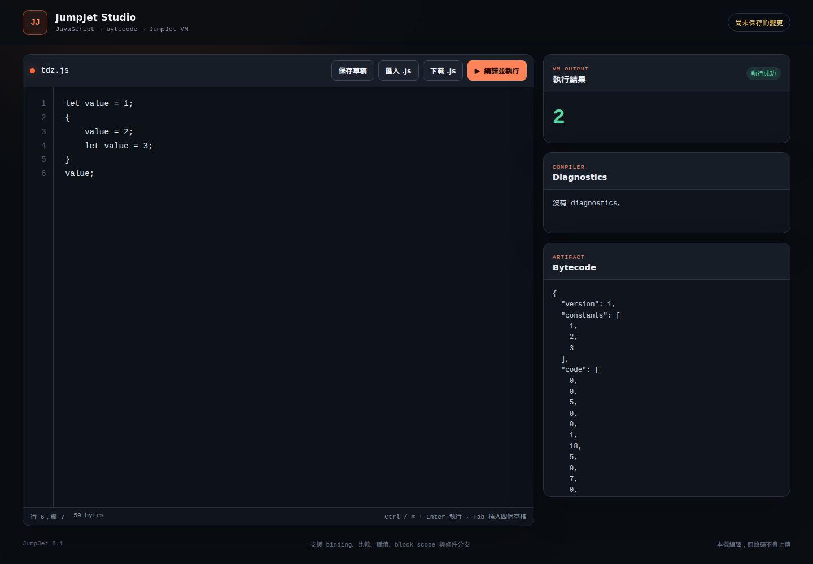
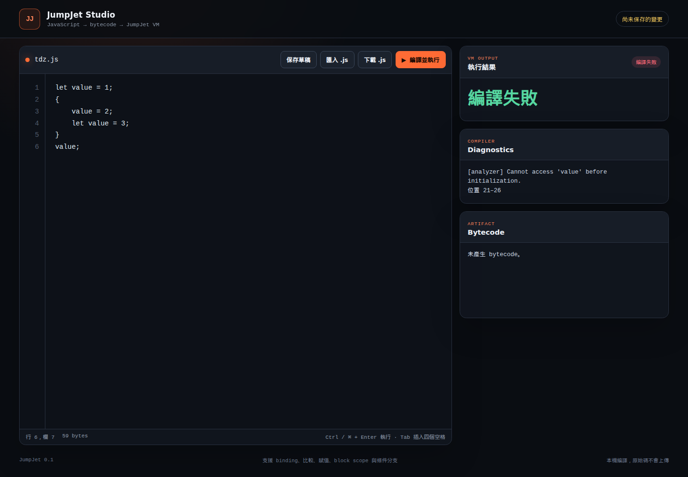
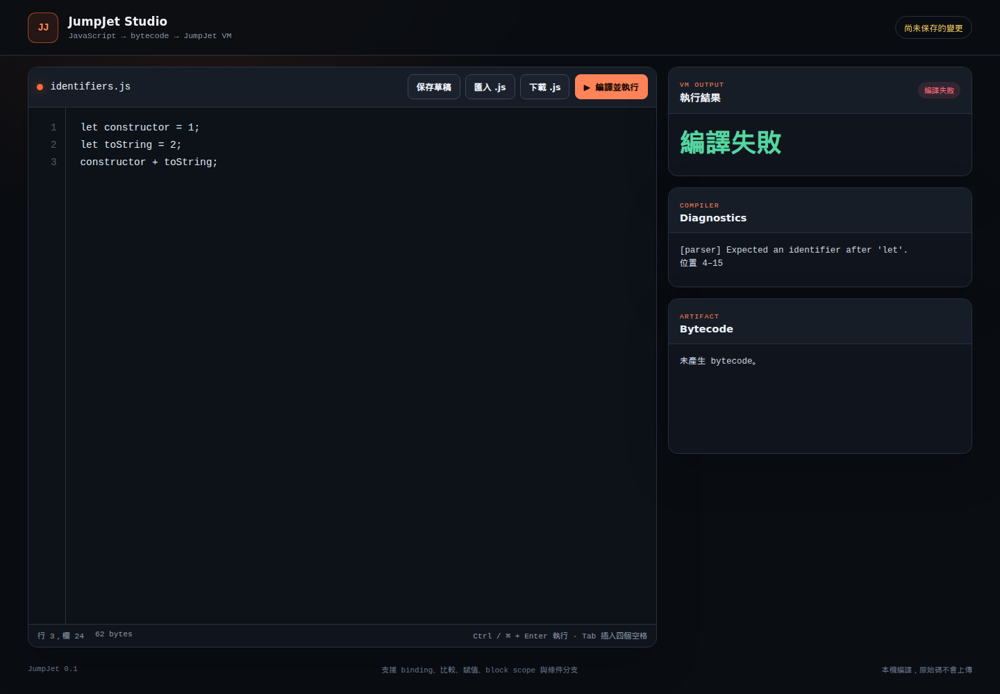
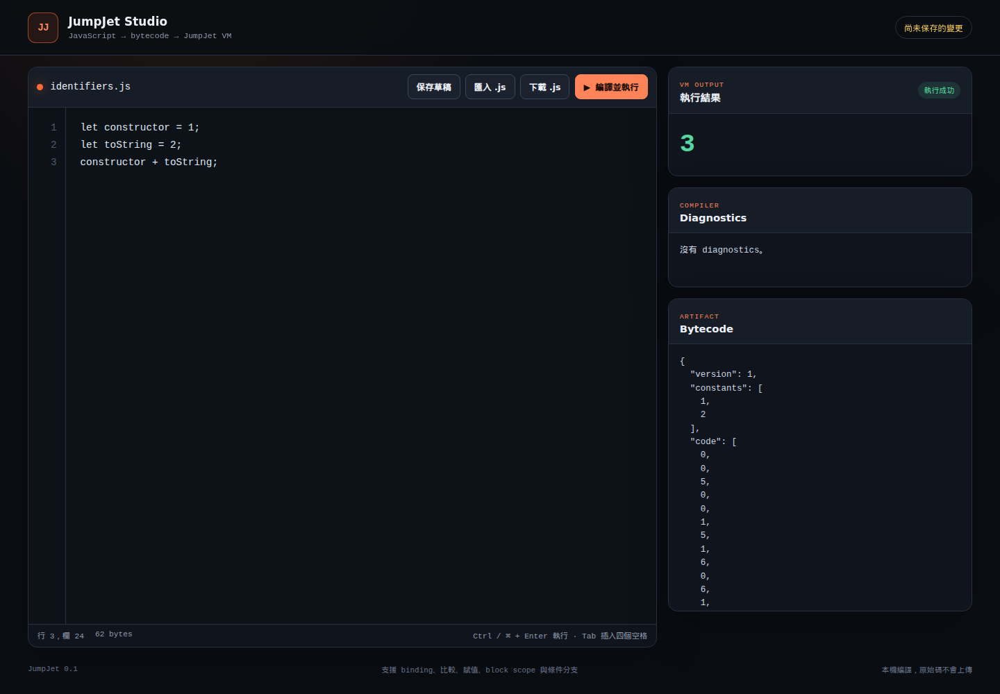
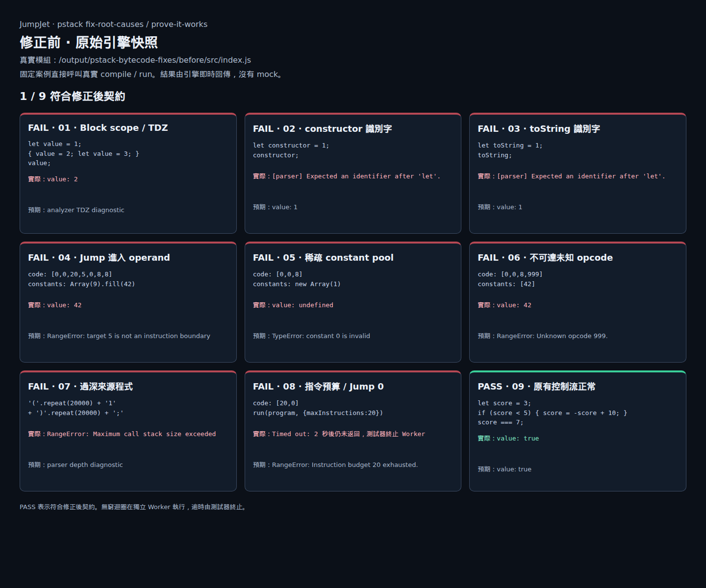
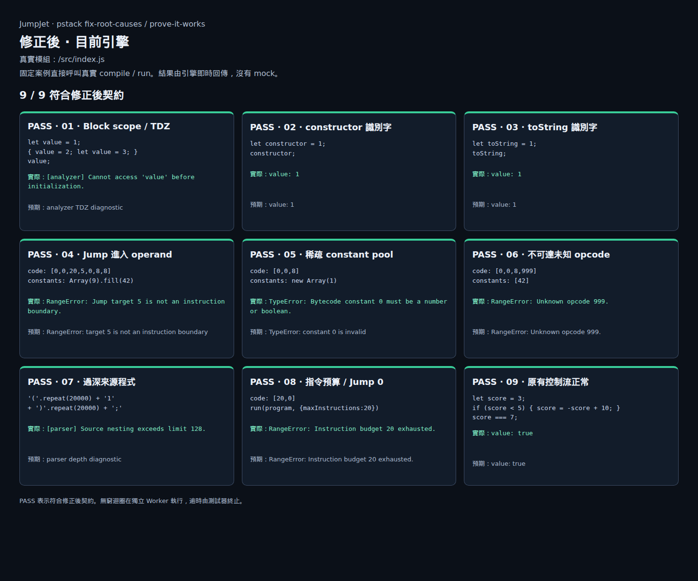

JumpJet 問題修正與前後對照
真實引擎執行、原版 source 快照、瀏覽器截圖與可重跑測試
已修正上一輪發現的缺口
本次使用 pstack 的 fix-root-causes 與 prove-it-works 原則。 先建立失敗測試，再修改各問題所屬的模組。 原先 23 項失敗測試現在全部通過。
| 證據 | 修正前 | 修正後 |
|---|---|---|
| 首批 29 項回歸測試 | 6 通過，23 失敗 | 29 通過 |
| 擴充後的邊界測試 | 首批完成後新增 17 項 | 46 通過 |
| 完整測試 | 保留首批失敗紀錄 | 94 通過，0 失敗、0 跳過 |
| 瀏覽器固定案例 | 1／9 符合修正後契約 | 9／9 符合修正後契約 |
| 逐檔語法檢查 | 本輪最終檢查 | 20 個 JavaScript 檔案通過 |
下方圖片都是真實瀏覽器截圖。 Studio 圖片來自實際編輯器。 VM 圖片來自直接呼叫真實模組的測試頁。 所有前後對照使用相同輸入，沒有 mock 引擎結果。
問題與根因的修正
| 問題 | 修正前實際結果 | 修正後實際結果 | 根因修正 |
|---|---|---|---|
| 內層宣告前賦值 | 錯誤寫入外層，返回 2 | analyzer 回報 TDZ | 進入 scope 時先建立直接宣告 |
| constructor、toString | parser 誤報名稱不合法 | 正常編譯並返回 1 | lexer 只查 keyword 表自己的 key |
| Jump 指向 operand | 把 operand 當指令，返回 42 | 拒絕非指令邊界的 target | 先完整解碼，再檢查 target |
| 稀疏 constants | 返回 undefined | 拒絕 constant 0 | 逐 index 檢查 own cell 與值型別 |
| Return 後未知 opcode | 未檢查，返回 42 | 拒絕 opcode 999 | 驗證完整 code，包含不可達區段 |
| 20,000 層括號 | 拋出宿主 stack overflow | parser 回報深度上限 | 遞迴限制與 AST 深度檢查 |
| Jump 0 | 持續執行，測試器必須終止 | 指令預算用完時拋出 RangeError | VM 計算實際執行的 opcode 數 |
另外補上 inherited array cell、未執行分支與缺少 operand 的驗證。 VM 執行私有快照，避免驗證後再讀到不同的 getter 值。 Studio 的錯誤邊界也涵蓋整個編譯與執行流程。
Studio 的實際畫面
點選圖片可開啟原尺寸。 左欄是保存的原版，右欄是修正後的工作目錄。
TDZ：錯誤返回 2，改為拒絕初始化前賦值
| 修正前 | 修正後 |
|---|---|
 |
 |


這段程式本來就不合法。 修正後顯示編譯失敗，表示 analyzer 正確阻止錯誤綁定。
合法識別字：編譯失敗，改為正常返回 3
| 修正前 | 修正後 |
|---|---|
 |
 |


兩張圖都執行 constructor 為 1、toString 為 2 的相同程式。
VM 與來源深度的完整前後對照
| 修正前：1／9 符合契約 | 修正後：9／9 符合契約 |
|---|---|
 |
 |


原版頁面載入 before/src/index.js。 修正後頁面載入 repo 的 src/index.js。 兩者共用同一份測試頁程式。
Jump 0 在獨立 Worker 執行。 原版執行 2 秒後仍未返回，由測試器終止。 修正後由 VM 自己在 20 條指令後停止。 這項結果不依賴測試器的逾時機制。
修正後的責任邊界
新增的 verifier 專門檢查 bytecode 結構。 VM 保留執行期 stack 與 slot 初始化檢查。 opcode metadata 同時提供 operand kind 與 stack effect。 版本 1 的 opcode 數值維持相容。
來源巢狀深度與 AST 深度上限都是 128。 預設指令預算為 1,000,000，呼叫者可明確指定。
run(program, { maxInstructions: 1000 });重跑證據與檢查範圍
在 repo 根目錄執行這個指令：
node output/pstack-bytecode-fixes/verify.mjs腳本執行完整測試、逐檔語法檢查與兩個 demo。 腳本也執行獨立檢查者保存的比對程式。
獨立檢查包含 800 組來源深度案例。 另有 500 次 Node.js 語意比對，涵蓋七種不同程式。 這些有限案例不能證明所有可能的程式都正確。
瀏覽器另驗證 20,000 層括號的 diagnostic。 錯誤後再執行 6 * 7，仍正確返回 42。 測試也模擬 compile 拋出例外，確認 UI 清除舊 bytecode。 這個模擬只測試 UI 邊界，沒有用於任何對照截圖。 測試過程沒有未處理的 page error。
照片的重拍流程保存在 capture-ui.js 與 capture-engine.js。 啟動 repo 根目錄的本機伺服器，port 設為 8765。 透過 Playwright CLI 載入腳本，即可重拍相同案例。
Studio 重拍腳本 · VM 重拍腳本 · 來源與照片 SHA-256
before 目錄保留本輪修改前的 source 與 Studio。 manifest 保存來源與照片雜湊，供後續核對。 原版快照、照片與驗證紀錄一併保存於版本控制。